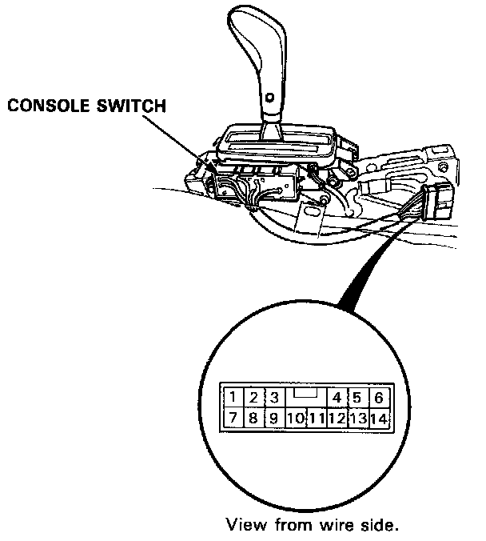
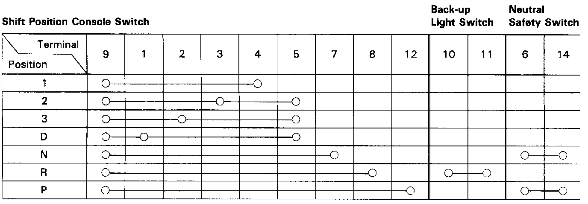

Shift Indicator - A/T: Testing and Inspection

Shift Position Console Switch Test
Remove the console, then disconnect the 14-P connector from the console switch.
2. Check for continuity between the terminals in each switch position according to the table.
NOTE:
^ Move the lever back and forth without touching the push button at each switch position, and check for continuity within a range of free play of the shift lever.
^ If there's no continuity within the range of free play, adjust the installation position of the console switch.
